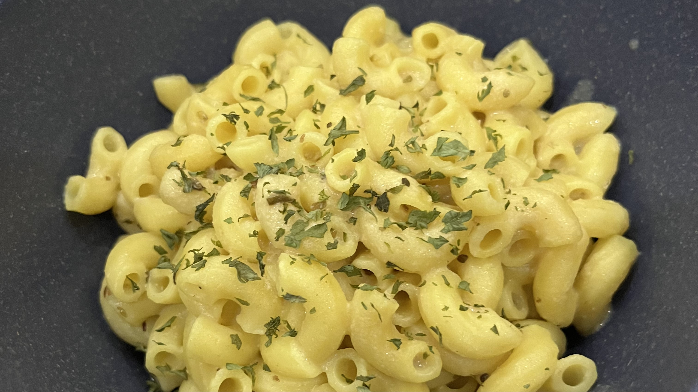

Vegan Alfredo Pasta
This should be a staple for every pasta-loving vegan. It's one of my favorite pasta recipes.
Ingredients
for one serving
Preparation
- Boil the pasta.
- While the pasta is cooking, heat a saucepan over medium heat.
- Add olive oil and cook.
- Add flour and mix to create a paste. Cook thoroughly.
- Gradually add milk, a few tablespoons at a time, stirring consistently. Don't add too much milk at one to ensure the sauce maintains a good thickness and doesn't become too runny.
- Once the sauce is at the desired consistency and amount, add nutritional yeast and seasonings to taste.
- Add the sauce to the cooked pasta.
- Enjoy!
Notes
- If the sauce becomes too runny, you may be able to save it by patiently waiting for the excess water to cook off.
- If you add too much milk at once, the flour mixture may not emulsify properly and the sauce may have lumps.